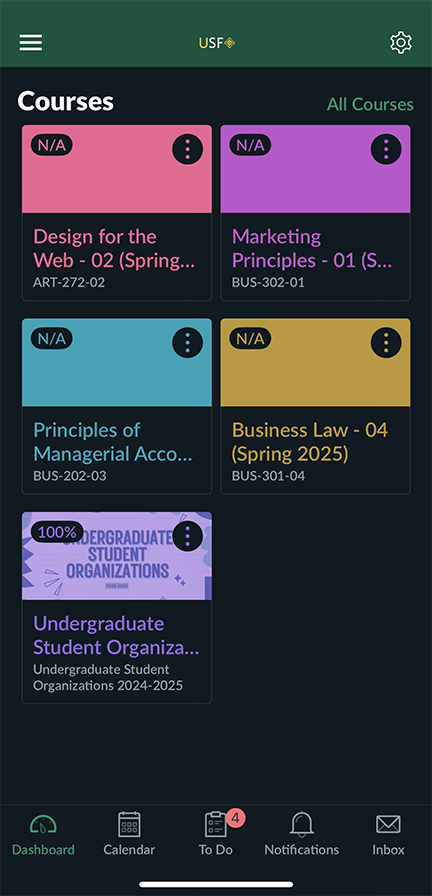
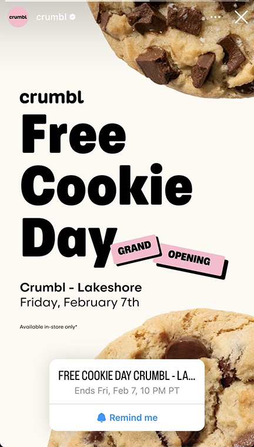
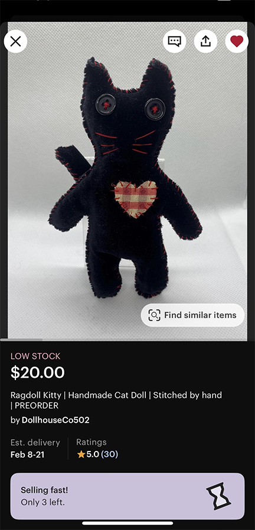
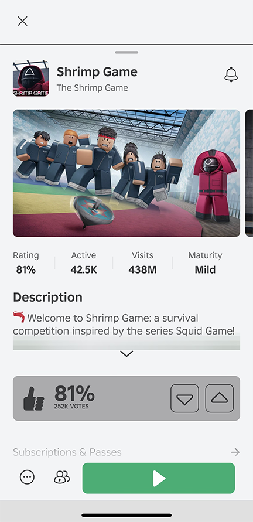

I look when I work at Target and put it down my calender.
I look at what assignments I have coming up that I need to complete first.

I use my notes app a lot. I put what I need to do like assignments, CAB stuff, and housekeeping in a note so I don't forget. I also have other notes like a wishlist which I add stuff I am planning to get when I have more money.

Since I am the Vice President of Marketing and Communications for the Campus Activties Board at USFCA, I post a lot on our instagram to promote our club and their events.
My friend sent me Crumbl's instagram story about a new location opening up in San Francisco and that they are giving a free cookie on their opening day. We love Crumbl's weekly flavors and always talk about how they need a location in SF but they finally do. It is all the way in Lakeshore though. We ended up going but they ran out and we got a card to get a free cookie next time.

I go on Pinterest to look for inspiration on style, tattoos, graphics, baking and more.

I listen to my playlist music in spotify when I am walking to destinations by myself. When I go to class, work or home. I been listening to a song called Stress Relief by late night drive home a lot recently.

I like to shop at Urban Outfitters a lot since they have clothes that are my style there. It is really expensive though so I look through and narrow down some favorites to decide from there what I should get.
I found a cute ragdoll kitty on tiktok and they have a shop on Etsy. I am planning to make or buy two for me and my boyfriend on Valentines day.

I found a tattoo I loved on tiktok and got an appointment set up to get something similar.
I played roblox with my boyfriend and friends.We got really into playing Shrimp Games which is like Squid Games because we keep getting so close to beating it. We also played Dress to Impress for a while but he was better then me so I didn't want to play anymore.

I go on either Netflix, Hulu, Disney+, Max,Amazonprime,or Peacock to find something to watch. I recently finsihed Breaking Bad and before that Gossip Girl and before that Gilmore Girls. I watch South Park mostly when I get tired on Tiktok and I can't find anything else to watch and just want to be entertained.